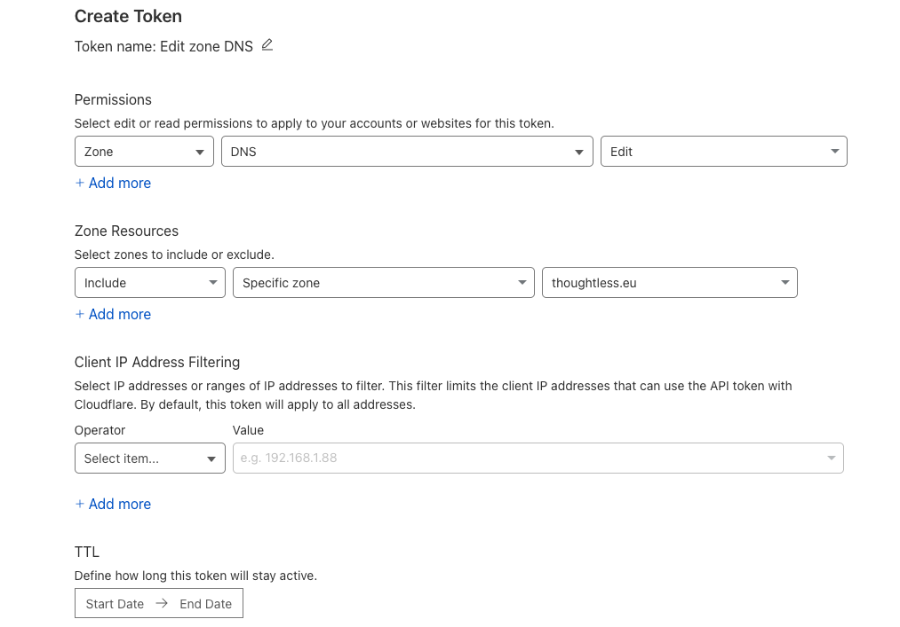

Expose applications securely with Cloudflare Tunnel
turing sits at home behind a box whose ports 80 and 443 are already taken, so its services go out through a Cloudflare Tunnel. This is free, you only need a domain managed by Cloudflare.
Cloudflare Tunnel
Install cloudflared and create the tunnel. It writes the credentials to ~/.cloudflared/<tunnel-id>.json; never commit that file.
brew install cloudflared
cloudflared login
cloudflared tunnel create turing-cluster
Store the credentials in the cluster's Vault, under kv/cloudflare, property credentials:
export VAULT_CONTEXT=omni-turing
mise run vault:kv patch kv/cloudflare credentials=- < ~/.cloudflared/<tunnel-id>.json
The ExternalSecret turing/system/cloudflare/externalsecret.yaml turns it into the cloudflare-tunnel-credentials Secret (key credentials.json). The tunnel itself is the cloudflare-tunnel chart from https://rubxkube.github.io/charts/, deployed by turing/system/cloudflare/app.yaml. It sends *.thoughtless.eu to Traefik (https://traefik.traefik.svc.cluster.local:443) over http2.
A CNAME pointing to <tunnel-id>.cfargotunnel.com reaches the cluster; turing's is 58c15097-f3b2-4ff7-a676-21bbeeea39d7.cfargotunnel.com.
External DNS
External DNS creates a Cloudflare record for each annotated Ingress.
Create an API token in Cloudflare that can edit the DNS records of the zone, then store it under kv/cloudflare, property dnsToken:

mise run vault:kv patch kv/cloudflare dnsToken=-
turing/system/external-dns/ holds the ExternalSecret (cloudflare-api-key, key apiKey) and the Application. Its records carry the turing- TXT prefix so they don't collide with the ones from mocha/system/external-dns.
Annotate an Ingress to publish it through the tunnel:
apiVersion: networking.k8s.io/v1
kind: Ingress
metadata:
annotations:
external-dns.kubernetes.io/cloudflare-proxied: "true"
external-dns.kubernetes.io/hostname: nginx.thoughtless.eu
external-dns.kubernetes.io/target: 58c15097-f3b2-4ff7-a676-21bbeeea39d7.cfargotunnel.com
name: nginx
namespace: default
spec:
ingressClassName: traefik
rules:
- host: nginx.thoughtless.eu
http:
paths:
- backend:
service:
name: nginx
port:
number: 80
path: /
pathType: Prefix